Bolascrip 1953
Bolascrip
(nicht Bolascript!) wurde von REH als Marke für hochwertige Füllfederhalter, Kugelschreiber und Thermometer-Hülsen genutzt.
Die Marke Bolascrip wurde bei Mehrfarbstiften auf Klipps von allen Stiften genutzt, die nicht ihren eigenen Namen (z.B. Bolavisio) oder den eines anderen Herstellers (White-Label) trugen.
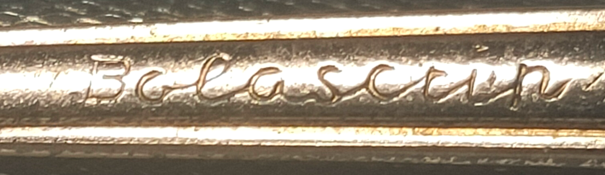
Bolavisio 1961
Die Farbe wird wie bei allen Sichtwahlkugelschreibern durch die Neigung des Stifts ausgewählt. Dafür wird wie gewöhnlich ein Pendel genutzt. Das besondere am Stift ist der Feststellmechanismus.
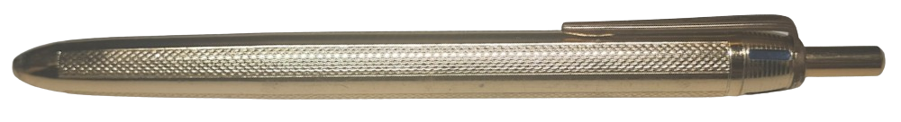
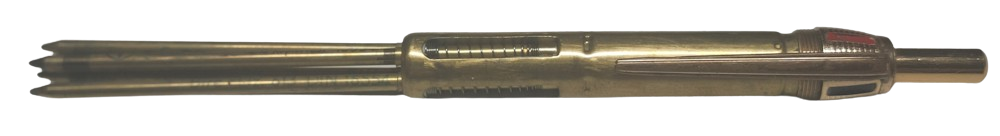
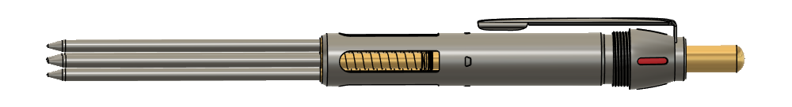
Der Feststellmechanismus ist ein
bekanntes Prinzip, doch das Vorkommnis in Mehrfarbstiften extrem selten;
Eine
Spreizzange/Klemmhülse rastet in einer Ringnut der Drückerstange ein,
welche dadurch gebildet wird, dass eine bewegliche Hülse (
rot) von der Klemmhülse verschoben wird.
Beim erneuten Drücken fährt die federnde Klemme auf die bewegliche Hülse auf. Beim Loslassen nimmt die Klemmung die Hülse mit. Die Hülse stoppt an einem Anschlag,
wodurch die Klemme von dieser abgleiten und auf die Drückerstange zurückfahren kann.
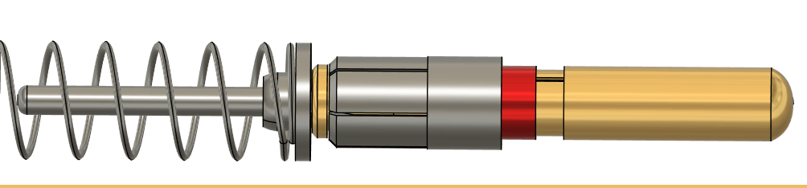
Der Drücker wird nach unten von der großen Druckfeder begrenzt und nach oben von der Klemmhülse, an welche er mit seiner unteren Verdickung anschlägt. Durch die Geometrie der Klemmhülsenblättchen
ist das Durchschieben des Verdickten Teils der Drückerstange nach unten möglich, aber das Herausziehen des Drückerstabs unmöglich. Fehlt einem Stift also der Drücker, müssen die Blättchen sich verbogen haben
oder abgebrochen sein.
Der Kopf des Stiftes, der die Farbindikatoren hält, ist aufgeschraubt. Deshalb finden sich Versionen des
Bolavisio, welche den Klipp an der Unterseite des Kopfes geklemmt haben.
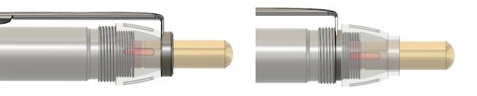
Der Bolavisio wurde manchmal mit 'Bolascrip', manchmal mit 'Bolavisio' auf dem Klipp verkauft.
Zudem findet er sich unter den Namen verschiedener anderer Firmen wieder wie z. B.
Recta, Norex oder Fedra.
Eine Version wurde
in Japan hergestellt. Diese ist unter 'W Knock' oder 'Merlinmatic' auffindbar. Die Slots in der den Mechanismus umschließenden Hülse wurden weggelassen.
Das Patent ist noch ungeklärt.
Wie erwähnt ist das Konzept nicht neu. Sogar der
erste Kugelschreiber-Drückmechanismus der Geschichte funktionierte auf fast identische Weise: US2491082, 25. Mai 1944 von László József Bíró.
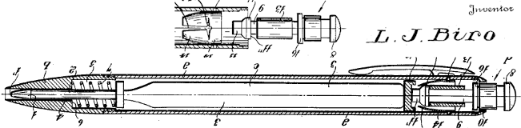
Ein Mehrfarbstift mit einer stationären Spannzange/Klemmhülse wurde 1955 von Kurt Morlock und Eugen Kratz angemeldet (DE964571).
Allerdings wurde ein eigener Sichtwahl-artiger Mechanismus dazuentwickelt, kein bloßes Pendel verwendet.
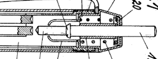
Ein erwähnenswertes Patent ist FR967514 von 1948. Dort befindet sich die Klemmhülse des Mehrfarbstifts
vorne innen an der Spitze des Stiftes. Jede Kugelschreibermine ist eine Sondermine, die mit einer axial verschiebbaren
Hülse versehen ist. Der Vorteil hiervon ist hohe Stabilität beim Schreiben.
Damals waren Kugelschreiberminen noch so teuer, dass sie manuell nachgefüllt wurden, und dann auch solche Sonderanfertigungen sein konnten.
Die Idee der Minenklemmung an der Schreibspitze ist auch bei Mehrfarbstiften aber bereits bekannt gewesen.
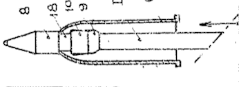
Kennen Sie das genaue Patent des Bolavisio?
Bitte schreiben Sie mir!
Bolascrip-Colour 1958
Ein Vierfarbenkugelschreiber, bei dem die Auswahl durch Drehen des Drückers in beliebige Richtung erfolgt. Dann drückt man den Druckknopf wie einen gewöhnlichen Kugelschreiber.
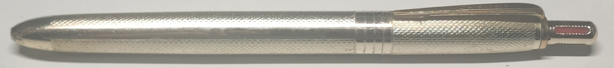
Nutzern fällt direkt die ungewöhnliche Minenhalterführung auf, welche seitlich flach statt mittig durch Löcher geschieht.
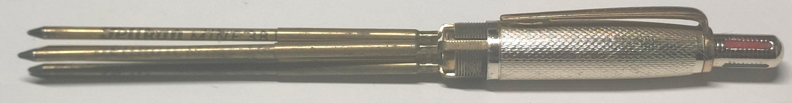
Der Mechanismus ist schlicht eingeschraubt.

Ein Federkolben (spring plunger) sorgt für die Feststellung. Das ist ungewöhnlich bei Mehrfarbstiften, aber bereits bekannt. Das berühmteste Beispiel einer Federkolben-Arretierung
ist der 1959 erschienene
Fenghwa 92, ein Zweifarbkugelschreiber, der einer der ersten Kugelschreiber Chinas Geschichte war.
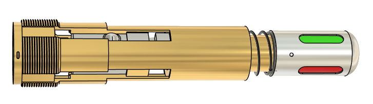
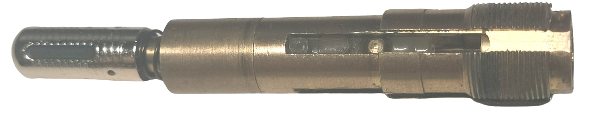
Die Minenhalter greifen in eine Ringnut. Ein Mitnehmer ist mit dem Druckknopf verbunden und umgreift je nach Rotation des Knopfes einen anderen Minenhalter.
Der Federkolben sorgt hierbei für die Rastung, indem er sich ganz einfach in die Längsnuten der Hülse drückt.
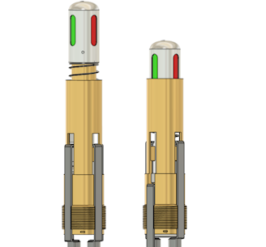
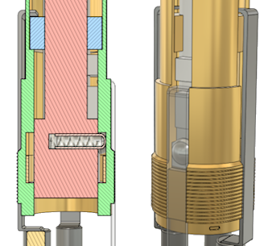
Drückt man nun den Druckknopf, wird bei fast maximal zu erreichendem Hubweg der Federkolben in eine weitere Ringnut gedrückt, welche den Mechanismus nun axial blockiert.
Das Entsperren ist ähnlich den anderen Mehrfarbstiften von REH: Die Kugel fährt auf eine verschiebbare Metallhülse, nimmt diese durch Reibung mit bis zu einem
Anschlag, ab dem die Kugel von der Hülse gleiten und wieder eingedrückt gehalten werden kann.
Eine Silberversion wurde wohlmöglich von
Mayer & Anthoni aus Pforzheim angefertigt. Die Besonderheit ist vor allem, dass der Mechanismus nicht mehr einfach herausschraubbar ist, sondern weiter
hinten in die Mantelhülse versenkt wurde.
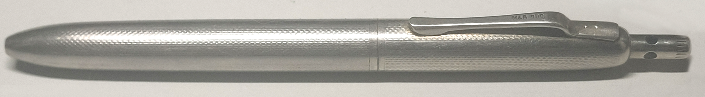

Das Patent des Bolascrip-Colour stammt von Bernhard Nägele junior (DE220017XA, 1958):
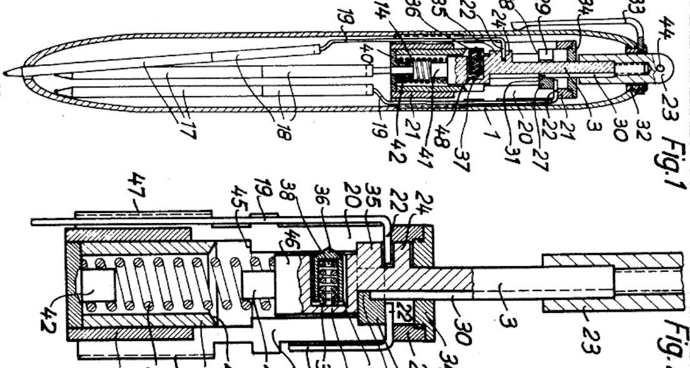
Weitestgehend ist er der Umsetzung identisch. Der Hauptunterschied ist die Position der Druckfeder, welche von unterhalb des Mechanismus verlegt wurde nach oben direkt unter den Drücker.
Der Bolascrip Colour wurde ebenfalls unter anderen Marken verkauft, wie z.B. Fedra.
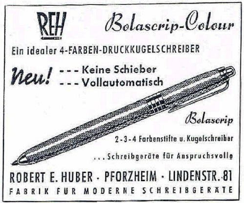
2-farb Kugelschreiber 1955
Mit DE1697886 reichte die Firma Robert E. Huber 1955 ihr einziges eigenes 'Mehrfarbstift'-Gebrauchsmuster ein, verkauft unter der
bolascrip-Reihe.
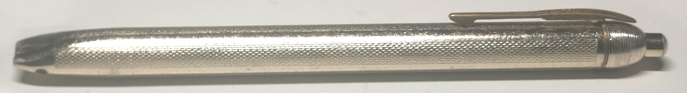
Es handelt sich um einen Kugelschreiber, der gleichzeitig zwei Minen parallel zueinander durch jeweils eine eigene Schreiböffnung vorschiebt.
Im Vergleich haben die ähnlichen Stifte
Goldring Spektral (bzw.
Floball Tri-Tone) nur eine einzige Schreiböffnung und keinen Drückermechanismus.

Die Minen werden durch eine kleine Distanzhalter-Hülse parallel gehalten. Eine große Druckfeder drückt die Minen wie bei einem regulären Kugelschreiber nach oben.
Wie bei REH-Mehrfarbstiften bereits gesehen hat auch dieser die typische abschraubbare Kappe, welche in diesem Fall einen Klipp fixiert.

Der Drückermechanismus nutzt eine spreizende/klemmende Hülse wie der Bolavisio, doch ragt diese zum rückseitigen Ende hin anstelle zur Schreiböffnung.
Desweiteren ist sie an der Drückerstange befestigt und bewegt sich demnach mit dieser mit, statt am Stiftkörper fixiert zu sein.
Die verschiebbare Hülse befindet sich folglich wie beim Bolascrip-Colour in einer Ringnut im Stiftkörper.
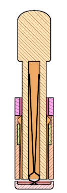
Die Scheibe unterhalb des Mechanismus, welche die Minen vordrücken soll, wird mit Blattfedern im Innenraum des Drückermechanismus gehalten.
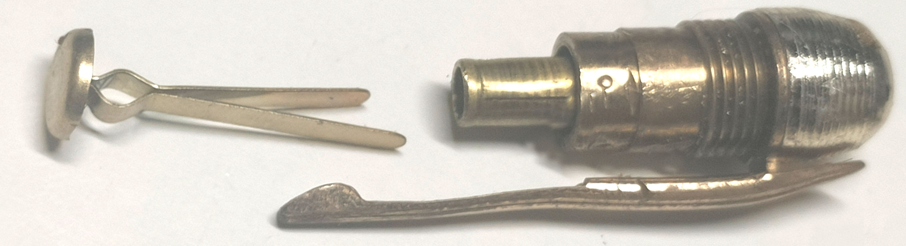
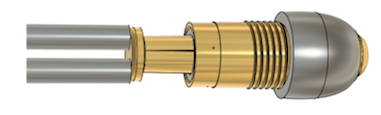
Das Gebrauchsmuster sieht den Stößel für den Minenvorschub etwas anders vor. Eine Stange (
blau) ragt weit ins Stiftinnere
und ist mit einer speziellen Aufnahme (6) für die beiden Minen verbunden. Diese hat für jeden der Stifte eine Ausnehmung, in welche sie hineingesteckt werden.
Dieses Teil ersetzt das Distanzstück aus der Umsetzung.
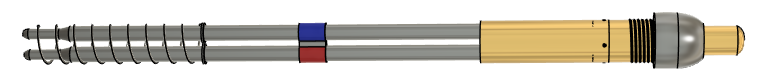
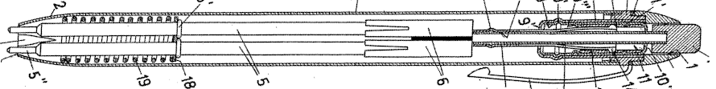
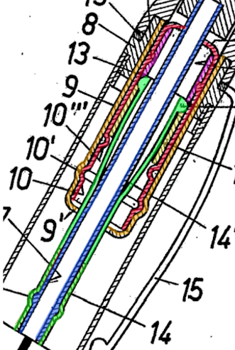
Haben Sie Interesse an den 3D-Modellen? Schreiben Sie mir gerne!